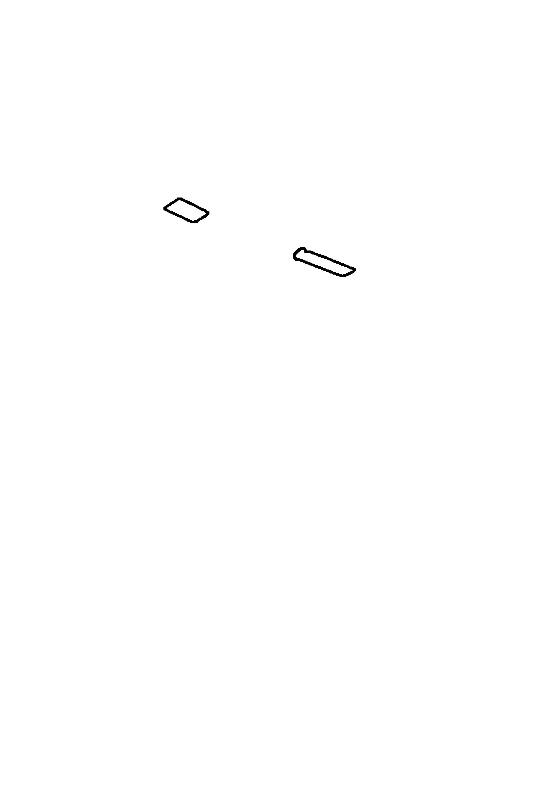
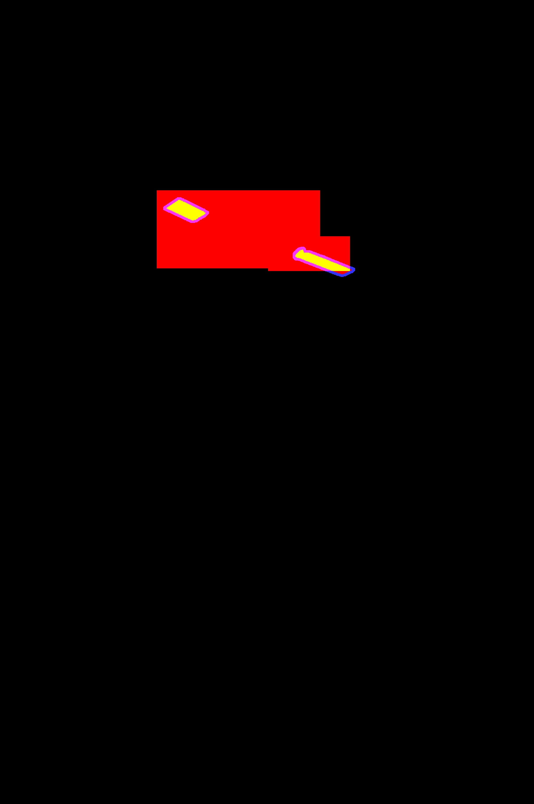

Reference Mask

System Output Mask
No-Score Zone
Mask Scoring Example
False Positives (FP): 175678
False Negatives (FN): 462
True Positives (TP): 11462
No Score Zone (NS): 9161

Reference Mask |
System Output Mask |
|  No-Score Zone |
 Mask Scoring Example |
| NIMBLE Mask Metric (NMM): -1.000000 | Total Pixels: 6016000 False Positives (FP): 175678 False Negatives (FN): 462 True Positives (TP): 11462 No Score Zone (NS): 9161 |